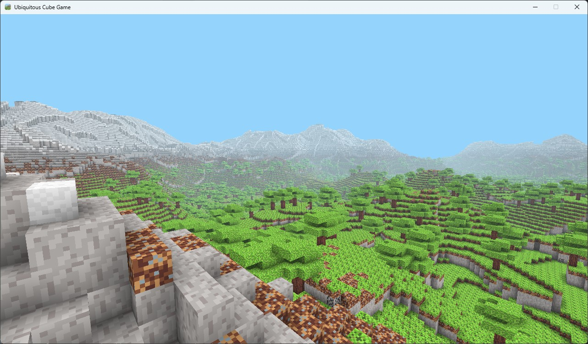

Performance is king
I've been working on optimizing the voxel engine for Ubiquitous Cube Game and wanted to share some of the technical decisions that went into making it run at 100+ FPS (on my M2 MacBook Pro). When you're rendering thousands of voxels in real-time, every optimization matters. Here's what I learned about squeezing performance out of Python and OpenGL on macOS.
The JIT compilation breakthrough
One of the biggest wins came from using Numba's @njit decorator on the hot paths. The mesh building and terrain generation code gets called constantly, so I needed them to run at quickly. Numba's JIT compilation takes Python code and compiles it to native machine code at runtime. If I wanted the greedy meshing algorithm to work, I needed to use Numba's JIT compliation.
Greedy meshing and why it matters
The algorithm "greedily" combines adjacent faces of the same type into larger quads. This reduces the vertex count dramatically. A 32x32x32 chunk could theoretically have 32,768 voxels, but with greedy meshing we're only rendering the surfaces. Could you imagine how slow things would be if we needed to render each face on those 32,768?
Packing vertex data tight
This is really cool: I pack 7 vertex attributes into a single uint32 per vertex. This includes position, normal, texture coordinates, and ambient occlusion data. The GPU unpacks these in the vertex shader using bit manipulation.
// Unpack position from packed data
vec3 position = vec3(
float((packedData >> 0) & 0x3F),
float((packedData >> 6) & 0x3F),
float((packedData >> 12) & 0x3F)
);
Tighter data means better cache utilization, both on the CPU and GPU sides. The only problem is I have to manually track the bit manipulation but as long as I don't add any other futures. It won't be too bad.
Two-pass rendering for transparency
Real water is transparent, but transparency in 3D rendering is tricky. You need to render opaque objects first (with depth writing enabled), then render transparent objects sorted back-to-front (with depth testing but no depth writing).
I ended up implementing a two-pass pipeline: 1. First pass: solid geometry with full depth buffer writes (your regular blocks from the world) 2. Second pass: transparent water with depth test only (maybe other transparent blocks in the future?)
The water shader has some nice effects too. I looked up this thing called Fresnel reflections, animated wave ripples using time-based UV offsets, and volumetric fog that gets denser with depth. All running in GLSL.
Why this matters for platform engineering
Ahah, you might be wondering, "Why is a platform engineer wasting their time with game dev?"
Oh I got the answer for you: performance optimization is performance optimization (also I started out doing game dev back in the day so this is just nice to do). Whether you're optimizing game engine render loops or optimizing Kubernetes resource allocation, the principles are the same:
- Profile first, optimize second. Don't try to guess where the bottlenecks are.
- Batch operations when possible. Your GPU wants large batches, and hopefully so does your database.
- Spatial partitioning works for voxels and for distributed systems.
I've used the same performance mindset when optimizing Fluent-bit configurations and tuning OpenSearch cluster performance at work. The tools change but the thinking doesn't.
What's next
Right now I'm working on adding an entity system for dropped items. When you break a block, it should drop as an entity that you can pick up. I also need to add a proper inventory system and a pause menu. I've implemented somewhat of a GUI manager but we'll see how this ends up.
The code is up on GitHub if you want to check it out: ubiquitous-cube-game
Anyway, that's my breakdown. Performance optimization is fun when you can actually see the FPS counter go up.